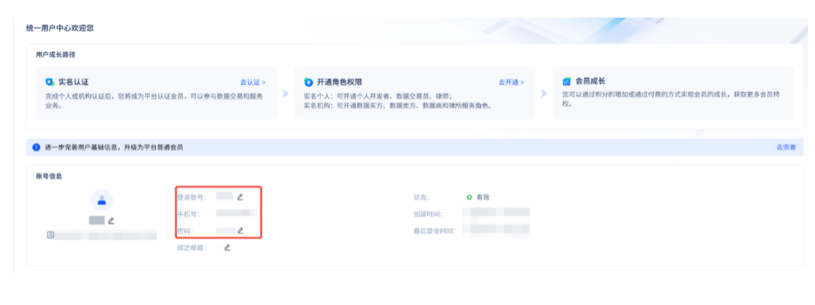

一、账号登录方式
平台有两种登录方式。一是通过账号密码进行登录，用户需要在注册完成后进入统一用户中心获得账号和密码（也可以在统一用户中心进行账号密码的修改）
一种是通过手机号及验证码进行登录。如忘记账号密码的用户，可以尝试使用手机号验证码进行登录。
二、账号信息查看
进入官网，点击右上角登录——进入统一用户中心

记住上图中红框内的二个信息，分别是登录账号、手机号以及密码，他们分别对应了账号登录的两种方式——手机验证码登录和账号密码登录。
温馨提示：如需修改密码，请在统一用户中心内进行操作，修改完成后请妥善保管新密码。
三、账号找回
当用户忘记密码需要找回时，需要充分排查清楚情形。
情况1：进入官网-登陆页面，在左下角"忘记密码"进行密码找回；如果您在找回页面输入手机号无法获得验证码，可能说明该手机号并未在平台注册
情况2：如果您是企业客户，您确认您公司已经在深圳数据交易所完成了注册，但手机号/账号密码均不清楚，可以通过机构账号找回的方式进行申请找回：点击"忘记密码"，在右上角找到"机构账号找回"
按照申请表单内容进行完整填写以及材料上传（注：请确保提交的材料完整、准确，符合要求，否则平台不予处理您的找回申请）。平台收到申请后会对资料进行核对校验，并与您联系。